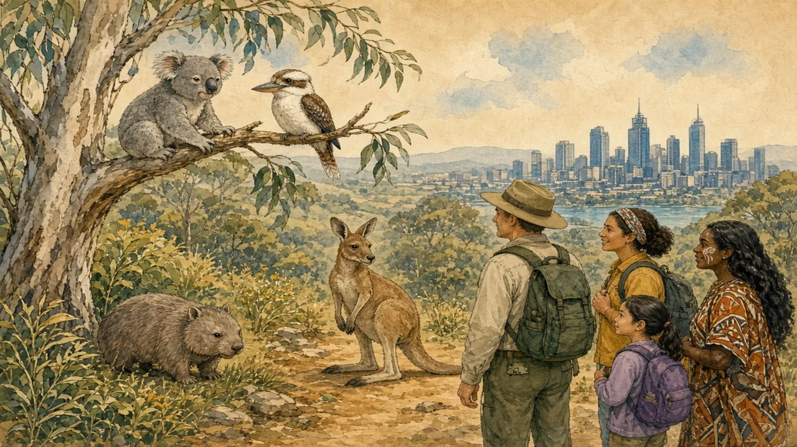

Australia and New Zealand are famous for unique animals — and for the damage that introduced species and fire have done to them.
Oceania · Wildlife & nature · Lesson 1 of 7
🌍 World map · ← Around the World: Oceania · 🌱 Easier version (A2) · ← Oceania: Oceans, Islands and the World's Oldest Living Cultures · “No Worries, Mate”: The Real Aussie and Kiwi English →

Each new word is hidden in a sentence. Read it aloud and say what you think the bold word means from the rest of the sentence — then reveal it and see how close you were.
Read each part. After it, there's a quick comprehension check (try the questions from memory first), then one thing to discuss.
Australia split away from other continents tens of millions of years ago, and its animals developed in isolation. Most of its mammals, reptiles and plants are found nowhere else, including kangaroos, koalas, wombats and the egg-laying platypus. New Zealand has no native land mammals except bats, so birds filled their roles: the kiwi, which is flightless, the kākāpō, a large flightless parrot, and the kea, an intelligent mountain parrot. Australia does have venomous snakes and spiders, as well as crocodiles and sharks, but they are rarely a danger in daily life: snakebite kills only a few people a year, and many more die on the roads. The vast majority of Australians live in cities.
1. Why are the animals so unusual?
2. Are dangerous animals a big risk in daily life?
1. Because they developed in isolation for millions of years.
2. No. They cause very few deaths compared with roads.
Isolation has made these animals vulnerable. Since Europeans arrived, cats, foxes and rabbits have spread across Australia, and the introduced cane toad, brought in 1935 to control beetles, has poisoned many native predators. In New Zealand, rats, stoats and possums have killed so many birds that several species have already disappeared. The koala has recently been listed as endangered in Queensland, New South Wales and the Australian Capital Territory, and the 2019–20 “Black Summer” bushfires, which burned roughly 18 million hectares, affected an estimated three billion animals. Warming seas have also caused coral bleaching on the Great Barrier Reef several times since 2016.
1. Why was the cane toad introduced?
2. Which fires harmed about three billion animals?
1. To control beetles on sugar-cane farms.
2. The 2019–20 Black Summer bushfires.
New Zealand has set an ambitious goal to be predator-free by 2050, and has already cleared several islands of rats and stoats to create sanctuaries where the kiwi and the kākāpō can recover. In Australia, Indigenous rangers use traditional fire management, burning small areas at the right time of year to reduce the risk of large fires, and conservation groups have fenced reserves to protect threatened marsupials. Scientists have not yet found a way to remove every pest, and the climate crisis adds new pressure. Visitors can help by staying on paths, keeping a respectful distance and choosing tour operators who support conservation, but the biggest decisions are made by governments, farmers and communities.
1. What is New Zealand's goal for 2050?
2. What do Indigenous rangers do in Australia?
1. To be predator-free.
2. They use traditional fire management to reduce the risk of large fires.
A stereotype and the reality rarely match. This lesson's grammar gives you the structure to describe the difference.
Complete each sentence about this topic.
1. Cats across Australia since Europeans arrived. (spread — present perfect)
2. Rangers traditional fire management for thousands of years. (use)
3. Scientists a way to remove every pest yet. (not find)
1. have spread
2. have used
3. haven't found
1. The koala recently been listed as endangered. (have / has)
2. Several bird species have disappeared from the mainland. (already / yet)
3. Coral bleaching several times on the Great Barrier Reef since 2016. (happen — present perfect)
1. has
2. already
3. has happened
Hold on to this — you'll need it in the Speak tab.
The “deadly Australia” joke is partly national humour and partly marketing, and it gives a misleading picture of where the danger lies. The wildlife, in fact, is far more at risk from people than people are from the wildlife. The story is also not only about nature: it includes who manages the land. Aboriginal and Torres Strait Islander peoples looked after Australia for tens of thousands of years, and Māori hold a guardianship tradition called kaitiakitanga. Today both are increasingly central to conservation, which suggests that the best protection combines scientific knowledge with long human experience.
This is the heart of the lesson — do all of it out loud. The timer is there to keep you going: fill the time with detail rather than escaping it.
Explain what Australia's and New Zealand's wildlife is really like, as if to a friend who thinks everything there is deadly. Move through the arc: a unique collection → fragile and under threat → protecting what is left.
Use today's grammar at least three times, and work in at least five key words (marsupial, endangered, introduced species, predator, bushfire, reef, bleaching, sanctuary).
“Protecting nature is more important than protecting jobs.” Discuss.
Tell a story from your own world — work, family, the news — that connects to this topic. Stuck for an idea? Pick one of these and run with it:
🌍 World map · ← Around the World: Oceania · 🌱 Easier version (A2) · ← Oceania: Oceans, Islands and the World's Oldest Living Cultures · “No Worries, Mate”: The Real Aussie and Kiwi English →